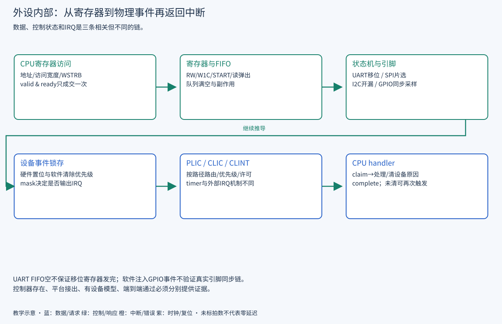

READ · TRACE · BUILD · EXPLAIN
H07 · 外设结构与中断机制
从一个寄存器操作，走到 FIFO、状态机、引脚与返回事件。
把驱动动作和硬件状态对应起来，理解读写副作用、流控和中断清除。
前置：H05；已有外设寄存器教程可作字典。证据：2026-09-23，源码基准 ae2b69fe0；原理推导与源码静态确认，动态证据另见硬件实验与证据。
第 11～16 章按设备给出寄存器与驱动；本章归纳硬件实现的共同结构，依次讨论寄存器语义、FIFO/状态机、中断通路与分层验证。
寄存器语义的硬件实现
RW数据应按wstrb更新字节；W1C状态只清软件写1的位；硬件事件与软件清除同拍时必须定义优先级，常见选择是事件置位优先以免丢事件，但应逐IP查实现。START写触发动作而非长期保存1；busy期间重入必须定义为拒绝、排队或错误。读清寄存器和FIFO弹出只在成交时生效。
UART FIFO、状态机与串行输出
总线接受寄存器写只表示字节进入设备。TX FIFO 暂存等待发送的数据；发送状态机按波特率计数器的节拍输出起始位、数据位、可选校验位和停止位。FIFO空与移位寄存器空不是同一状态，所以“可以再写一个字节”和“引脚发送全部结束”通常对应不同状态位。

本地 UART wrapper 将 Regbus 请求适配到 UART 的 APB 接口；实际移位/FIFO逻辑在依赖IP内。读取接收数据会消费队列，重复读不是无副作用；寄存器地址还受DLAB等选择影响。配置除数时应先知道真实系统时钟与设备公式，不能把FPGA除数直接用于TB。
外设控制器的结构分类
| 结构类型 | 代表设备 | 内部关键状态 | 最有价值的观察 |
|---|---|---|---|
| 串行移位 | UART / SPI | FIFO读写指针、移位寄存器、位计数、帧/片选状态 | bus写入、FIFO弹出、引脚边沿之间的时间关系 |
| 共享开漏总线 | I2C | 命令队列、START/ACK/STOP状态、采样/驱动时序 | 输出使能与实际SCL/SDA输入；拉高通常靠释放，不是推挽输出1 |
| 输入事件 | GPIO | 同步采样、边沿/电平检测、锁存状态、mask | 引脚变化→同步后值→intr_state→IRQ；短脉冲可能需要专门捕获 |
| 持续数据流 | VGA / Serial Link | 取数队列、行帧/链路状态、时钟域缓冲 | 生产/消费速率、欠载或背压，不能只看控制寄存器 |
| 描述符驱动主机 | USB OHCI | 调度、描述符访存、端口与PHY状态 | 软件栈、设备模型、PHY时钟和DMA路径缺一不可 |
SD 与 NOR 即使共享 SPI 控制器，也有不同设备命令、响应和超时；不能因为 SPI 波形正确就宣布存储协议通过。对应寄存器、驱动和具体缺口分别见UART/GPIO、I2C、SPI/NOR/SD、流接口。
中断源、路由与服务过程
- 设备事件产生 pending 状态；enable/mask 决定是否拉起设备 IRQ。
- SoC 接线、必要同步与 IRQ Router/fanout 把源送到控制器。
- PLIC按目标enable、优先级和threshold决定向CPU发外部中断。
- CPU允许该级中断时进入handler，软件claim得到源号。
- 驱动处理并清设备原因，再按控制器协议complete。电平源若仍为高，完成后可能再次pending。
CLINT 的 timer/software interrupt与PLIC外部中断路径不同；mtime达到mtimecmp产生条件，不靠claim/complete消除。CLIC可选路径还涉及CPU配置、源数、向量/优先级语义，不能把PLIC代码换个基地址继续用。
寄存器与引脚的分层验证
以GPIO为例，分别验证寄存器软件注入与真实引脚边沿。前者能覆盖PLIC/handler，但不能证明输入同步器、PAD或外部连线。当前fixture的GPIO输入绑零，已有综合软件例使用软注入；VGA输出与USB时钟也有环境缺口。教材每次区分“RTL有设备”“引脚接出”“有对端模型”“端到端验证”。
源码阅读与验证练习
工作目录：仓库根。以下为只读练习，工具 Python 3 / rg；终端输出即产物，可复制到个人学习记录。通常数秒完成，超过 10 秒可中止检查路径；不启动 SoC 仿真。
rg -n 'gen_uart|gen_gpio|gen_irq_router|intr.intn' hw/cheshire_soc.sv
rg -n 'gpio_i|usb.*clk|vga_' target/sim/src/fixture_cheshire_soc.sv成功判据：画出 GPIO pin→源状态→PLIC→CPU→清源 的链，并指出当前 fixture 哪一步无法用默认输入验证。无IRQ先查设备pending和enable，再查源号、PLIC与CPU屏蔽；应确认中断路径后再检查优先级编码。
源码依据
本章自测
UART FIFO空等于TX脚已经发完吗？
不一定。移位寄存器可能仍在发送，必须区分发送保持寄存器/FIFO状态与发送器全空。
中断complete后立刻再进handler一定是PLIC错误吗？
不一定。设备电平原因未消除会再次触发，应检查清源与重新置位条件。
对W1C寄存器读改写有什么风险？
读出的其他置位位也可能被写1清除。应按实际语义只写要清的掩码，避免误清并发事件。